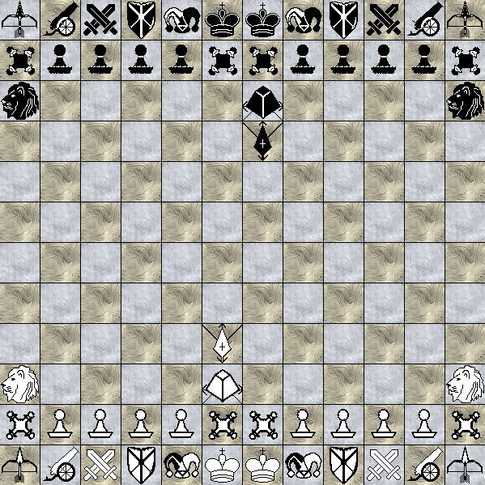
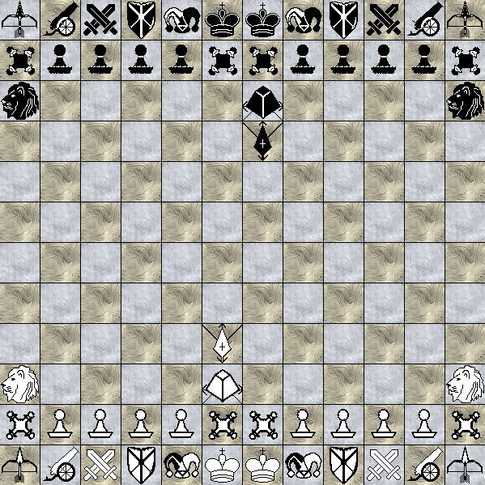

Introducción .
En el mundo de las variantes del ajedrez siempre hay juegos que destacaban por su masividad y complejidad. Un ejemplo es el ajedrez tridimensional de Sheldon Cooper en la Teoría del Big Bang, la variante aquí descrita ha sido creada por un usuario cuyo alias es "Ace569er" y la explicación de estos tableros es la siguiente:
Tablero
El tamaño del tablero es variable, se presupone que hace uso de un substrato de 16x24 casillas, al que se les añade casillas bloqueadas (hacen la función de obstáculo o borde).
Piezas
Este juego hace uso de más de 30 tipos de piezas, literalmente, aquí solo explicaré las piezas comunes de las subvariantes fáciles.
Tipo peón
- - Peón (P) : clásico peón, su movimiento no cambia.
- - Esclavo (S) : reverso del peón, mueve un paso en diagonal hacia delante y captura un paso en ortogonal hacia delante.
- - Juglar (J) : una especie de peón omnidireccional, mueve un paso en cualquier ortogonal y captura un paso en cualquier diagonal.
- - Gámbito (G) : el reverso del juglar, mueve un paso en cualquier diagonal y captura un paso en cualquier ortogonal.
Tipo saltador unitario:
- - Asesino templario (A) : mueve como caballo o un paso en ortogonal.
- - Paladín diabólico (U) : mueve como caballo o un paso en diagonal.
- - Caballo (N) : como el clásico caballo.
- - Mago (M) : mueve en hipogonal de 3,1 o 3,2; es decir, mueve como caballo pero su "L" es más alargada, de 3 pasos en una dirección y 1 o 2 pasos en perpendicular a tal.
- - Guardián alto (H) : mueve un paso en ortogonal, o salta dos pasos en ortogonal o diagonal.
- - Verdugo (E) : mueve un paso en diagonal, o salta dos pasos en ortogonal o diagonal.
- - Dragón (D) : mueve un paso en ortogonal o salta en hipogonal de 3,2 (L de caballo extendida, 3 pasos en una dirección y 2 pasos en perpendicular a tal).
- - Fénix (X) : mueve un paso en diagonal o salta en hipogonal de 3,1 (L de caballo extendida, 3 pasos en una dirección y 1 paso en perpendicular a tal).
Tipo deslizador:
- - Barricada (W): mueve un paso hacia delante o detrás, o indefinidos pasos en ortogonal lateral o diagonal hacia atrás.
- - Ariete (V): mueve un paso lateral, o indefinidos pasos en ortogonal detrás/delante o diagonal hacia delante.
- - Torre (R): como la clásica torre.
- - Alfil (B): como el clásico alfil.
- - Cañón (O): en ortogonal, solo puede mover si hay piezas aliadas o enemigas cercanas en ortogonal a tal, el cañón deberá mover saltando tales en saltos binarios (como si fueran damas, del juego damas), indefinidos saltos.
Para capturar debe saltar en binario sobre piezas enemigas, al igual que antes, pero en diagonal.
- - Arquero (I): en diagonal, solo puede mover si hay piezas aliadas o enemigas cercanas en diagonal a tal, el cañón deberá mover saltando tales en saltos binarios (como si fueran damas, del juego damas), indefinidos saltos.
Para capturar debe saltar en binario sobre piezas enemigas, al igual que antes, pero en ortogonal.
- - Duque (@): un paso en diagonal seguido por indefinidos pasos en ortogonal.
- - Príncipe (Y): mueve y captura cómo torre, o solo mueve (no captura) cómo alfil.
- - Príncipe (Z): mueve y captura cómo alfil, o solo mueve (no captura) cómo torre.
- - "Lord" León (L): mueve un paso en cualquier dirección, seguido por otro paso en cualquier dirección.
- - Reina (Q): y cómo siempre, reina mueve cómo reina.
Tipo híbrido/brincador/langosta/saltador vectorial:
- - Bromista (F): da un paso en cualquier dirección solo para capturar, o captura a un oponente en cualquier casilla impar en diagonal u ortogonal.
- - Torre (T): da un paso en cualquier ortogonal solo para capturar, o captura a un oponente en cualquier casilla impar en ortogonal.
- - Cardenal (C): da un paso en cualquier diagonal solo para capturar, o captura a un oponente en cualquier casilla impar en diagonal.
- - Unicornio ($): salta cómo un caballo, pero es capaz de saltar múltiples veces cómo caballo en el mismo vector.
- - Arzobispo (%): mueve cómo alfil o caballo.
- - Canciller (&): mueve cómo torre o caballo.
Rey (K): como el clásico rey.
Emperador (!): saltador universal, puede transportarse a cualquier casilla vacía del tablero. Actúa según diferentes normas.
Comodín (€): imita los posibles movimientos de la última pieza movida por el oponente.
Probablemente hay más piezas he inventarán más, asi que es un largo etc.

 
